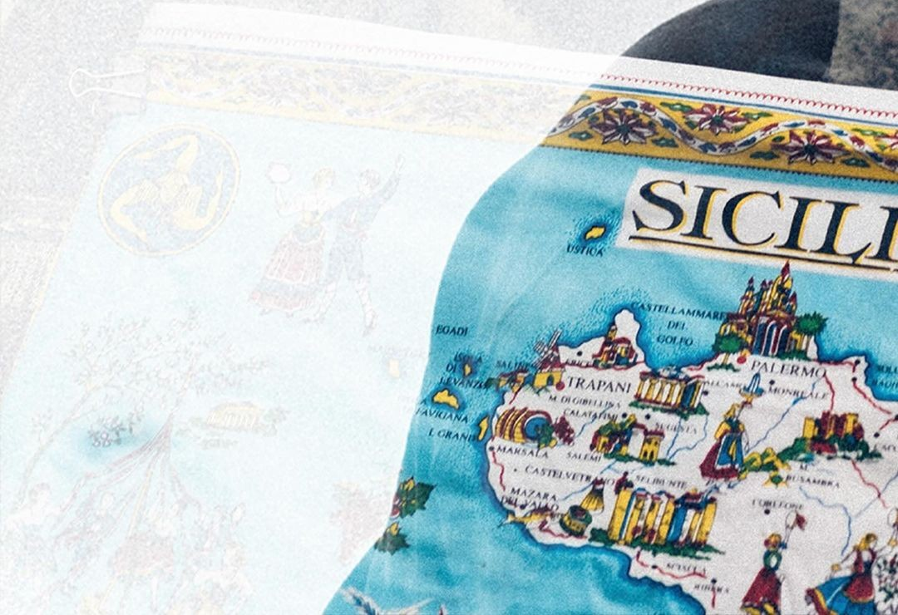
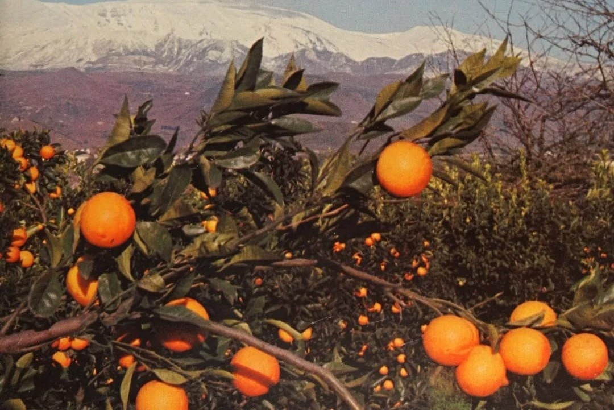
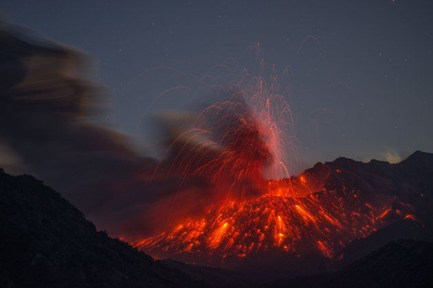
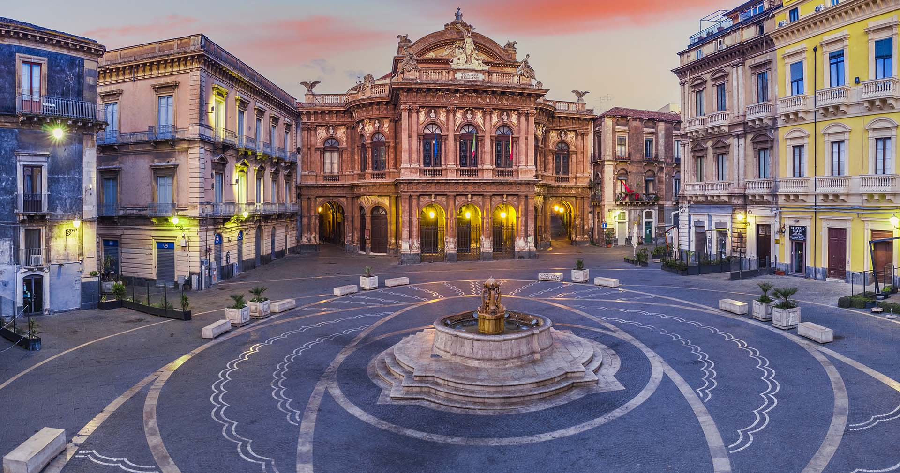
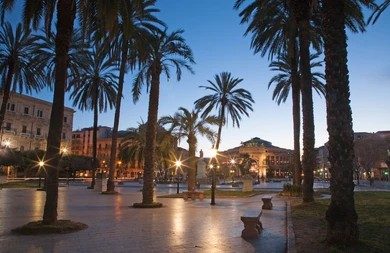
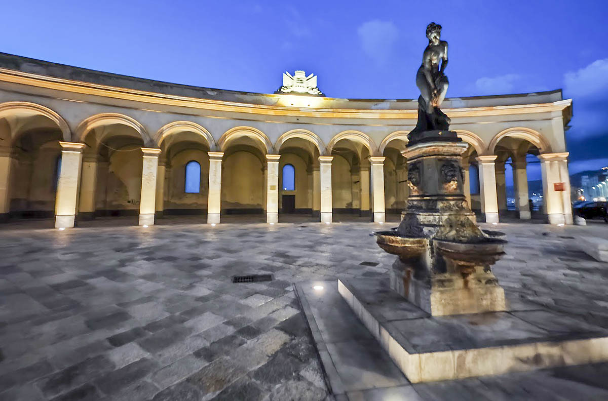
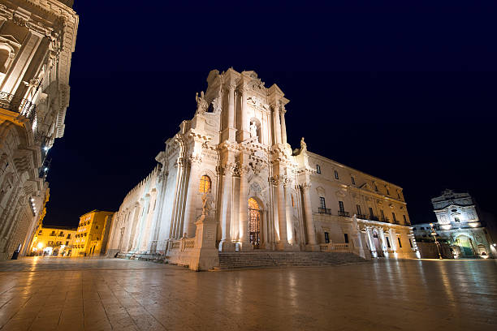
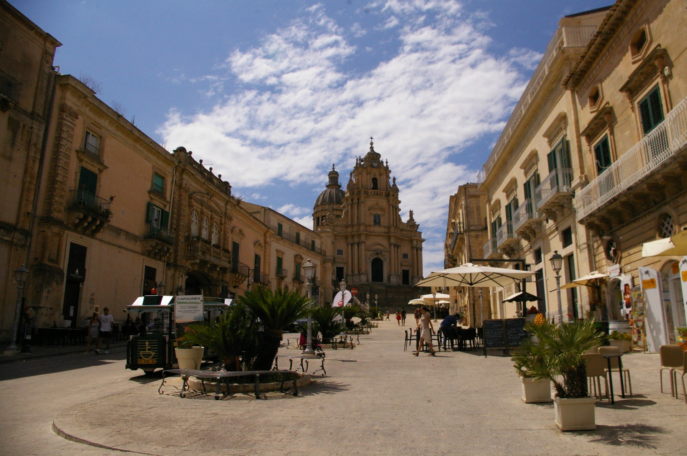
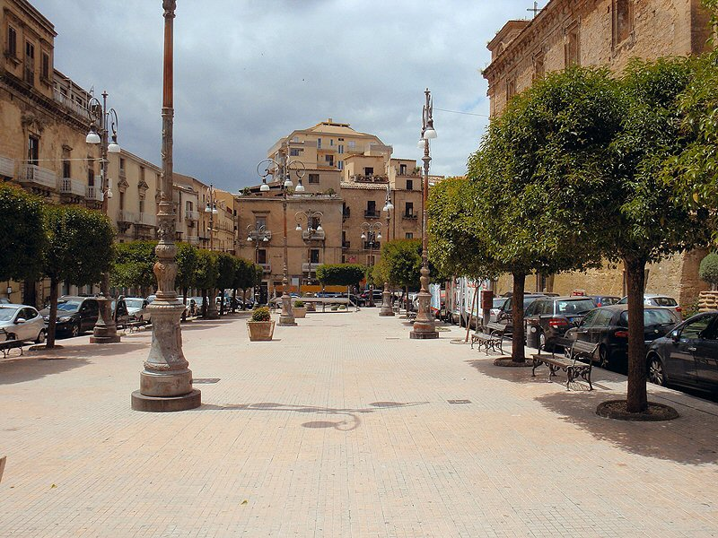

Home
.jpg)


.webp)

Territorio

L’Incrocio delle Stirpi
La struttura di Civitas è il risultato di una sedimentazione millenaria, un mosaico di culture che hanno trasformato il vuoto urbano in un'opera corale: L'Eredità Greca: Ha donato il respiro della democrazia e la sacralità dell'incontro. L'Impronta Araba: Ha insegnato il segreto dell'ombra, con labirinti di vicoli che si aprono improvvisamente su slarghi accecanti. Il Segno Normanno: Ha impresso la maestosità delle cattedrali, baluardi di pietra che sfidano il cielo. Con il Barocco, la piazza siciliana si è definitivamente trasfigurata in Palcoscenico. Non più solo luogo di passaggio, ma scenografia vivente dove le facciate sono quinte teatrali e la vita quotidiana diventa rappresentazione. Ogni borgo di questa Civitas emana un profumo unico: la salsedine dei porti trapanesi, le spezie dei mercati palermitani, il sentore di pascolo degli Iblei. Qui, tra il clamore dei mercati e il silenzio delle processioni, il tempo non scorre, ma si stratifica. Queste nove piazze sono soglie simboliche: varcarle significa immergersi in uno stato d'animo antico, scoprendo che la Sicilia non si visita, si respira.

Piazze
Catania

Catania: Piazza Duomo
È il cuore della città, caratterizzata dal barocco catanese (Patrimonio UNESCO). Al centro si trova la Fontana dell'Elefante ("Liotru"), simbolo di Catania. È circondata dalla Cattedrale di Sant'Agata e dallo storico Palazzo degli Elefanti .Il protagonista è il Liotru, l’elefante in pietra lavica di epoca romana che sorrege un obelisco egizio .La leggenda vuola che protegga la città dalle eruzioni dell’Etna
Palermo

Palermo: Piazza Castelnuovo
Insieme alla contigua Piazza Ruggero Settimo, forma un ampio spazio conosciuto dai palermitani come "Piazza Politeama", per la presenza del maestoso Teatro Politeama Garibaldi. È il salotto della città, simbolo della Palermo moderna ed elegante.Luogo di grandi raduni , dalle passeggiate domenicali tra le palme e dei negozi di alta moda di Via Libertà
Trapani

Trapani: Mercato del Pesce
Situata lungo la passeggiata fronte mare, questa piazza storica con il suo caratteristico colonnato a emiciclo era un tempo il fulcro del commercio ittico. Oggi è un suggestivo spazio pubblico per eventi e passeggiate, simbolo del legame tra la città e il mare. Le arcate che si vedono risalgono al 1874.Al centro si trova la statua di Venere Anadiomene (che sorge dalle acque),simbolo delle origini della città.Un tempo luogo di urla e commercio frenetico , oggi è il centro della “movida” e delle passeggiate al tramonto lungo le mura.
Siracusa

Siracusa: Piazza Duomo
Situata sull'isola di Ortigia, è considerata una delle piazze più belle d'Italia. Ha una forma a semicerchio ed è pavimentata in pietra bianca. La facciata barocca del Duomo ingloba le colonne del tempio greco di Atena, creando un mix unico di epoche storiche.Il Duomo è il palinsesto storico: si può vedere le enormi colonne doriche del Tempio di Atena (V sec. a.C) incastonate nelle mura barocche. Vi si affacciano anche il palazzo Senatorio e la chiesa di Santa Lucia alla Badia che costudisce un capolavoro del Caravaggio.
Ragusa

Ragusa: Piazza Duomo (Ibla)
È il centro pulsante di Ragusa Ibla, dominata dalla maestosa facciata della Cattedrale di San Giorgio. La piazza è in pendenza e offre una prospettiva scenografica tipica del barocco del Val di Noto, circondata da palazzi nobiliari e caffè storici.La piazza è circondata da eleganti palazzi con i classici mascheroni barocchi sotto i balconi.La particolarità è l’orientamento della Cattedrale di San Giorgio , che è leggermente di “traverso” rispetto alla piazza per allinearsi alla prospettiva della discesa.
Agrigento

Agrigento: Piazza Luigi Pirandello
Situata nel centro storico, è dedicata al celebre scrittore agrigentino. Sulla piazza si affacciano il Palazzo di Città (un ex convento dei Domenicani) e il Teatro Pirandello. È un importante punto di ritrovo culturale della città.Il Palazzo dei Giganti che domina la piazza, deve il suono nome alle colossali statue(Telamoni)del Tempio di Giove nella Valle dei Templi . Essa è il polo civile della città , con il Teatro intitolato allo scrittore e l’ingresso al fitto reticolo di vicoli del centro storico arabo.
Enna

Enna: Piazza Vittorio Emanuele II
Rappresenta il principale luogo di incontro degli ennesi. È una piazza spaziosa su cui si affaccia la Chiesa di San Francesco d'Assisi e il Palazzo del Governo. Da qui si può godere della vista sulla città che, essendo il capoluogo più alto d'Italia, offre panorami mozzafiato.Conosciuta anche come “Piazza San Francesco” . È il punto più alto della città (1000 metri). Si trova anche la chiesa di San Francesco.
Caltanissetta
.webp)
Caltanissetta: Piazza Giuseppe Garibaldi
È il fulcro della vita cittadina, dove si incontrano il Duomo (Cattedrale di Santa Maria la Nova) e il Palazzo del Carmine. Al centro spicca la Fontana del Tritone, realizzata dallo scultore Michele Tripisciano. Il punto di incontro dei due assi principali della città (il Cassaro e Corso Vittorio Emanuele). La Fontana del Tritone (1956) è un bronzo ispirato a quella del Bernini a Roma . Qui si svolge il momento clou della Settimana Santa una delle più sentite in Sicilia.
Messina

Messina: Piazza Antonello
Caratterizzata dai suoi palazzi con portici in stile neoclassico disposti a semicerchio, la piazza è dedicata al celebre pittore Antonello da Messina. È un importante snodo cittadino situato a breve distanza dal Duomo. Caratterizzata dai Quattro Palazzi con facciate curve che seguono l’andamento della piazza, creando ,creando un effetto circolare perfetto.Fu ricostruita dopo il terremoto del 1908 cercando di dare un’impronta di ordine e solennità alla città “risorta”